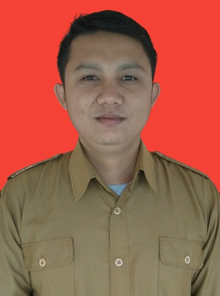
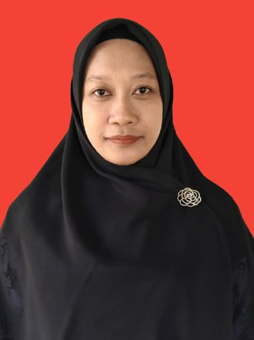
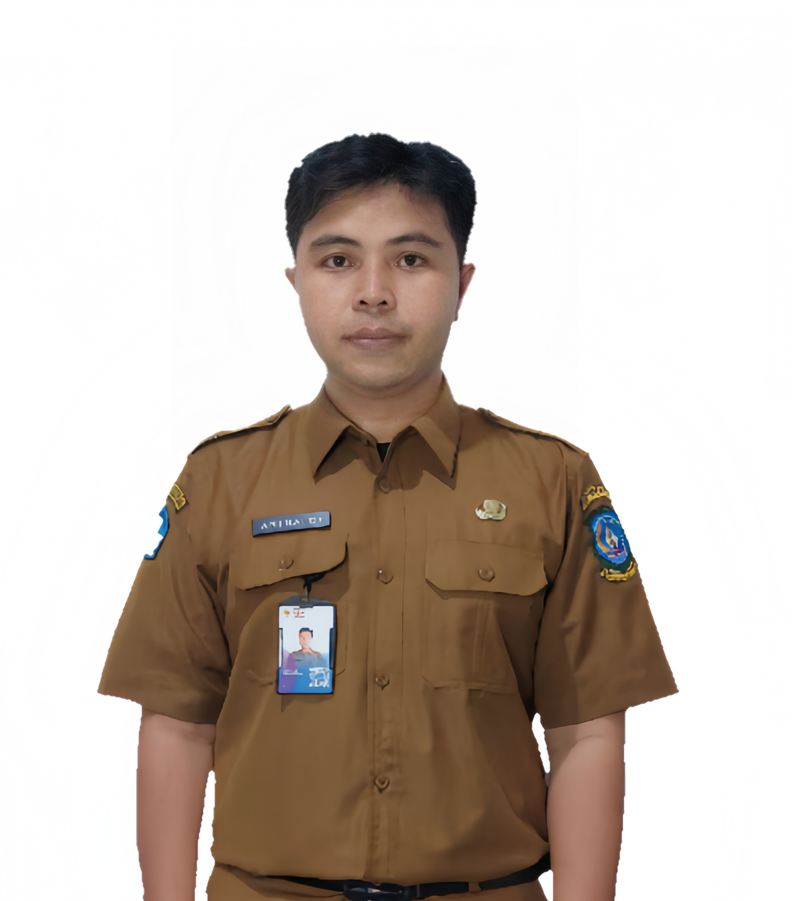
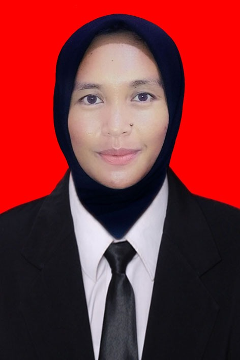
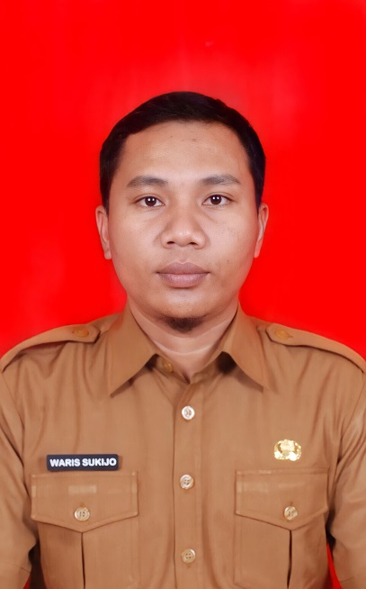
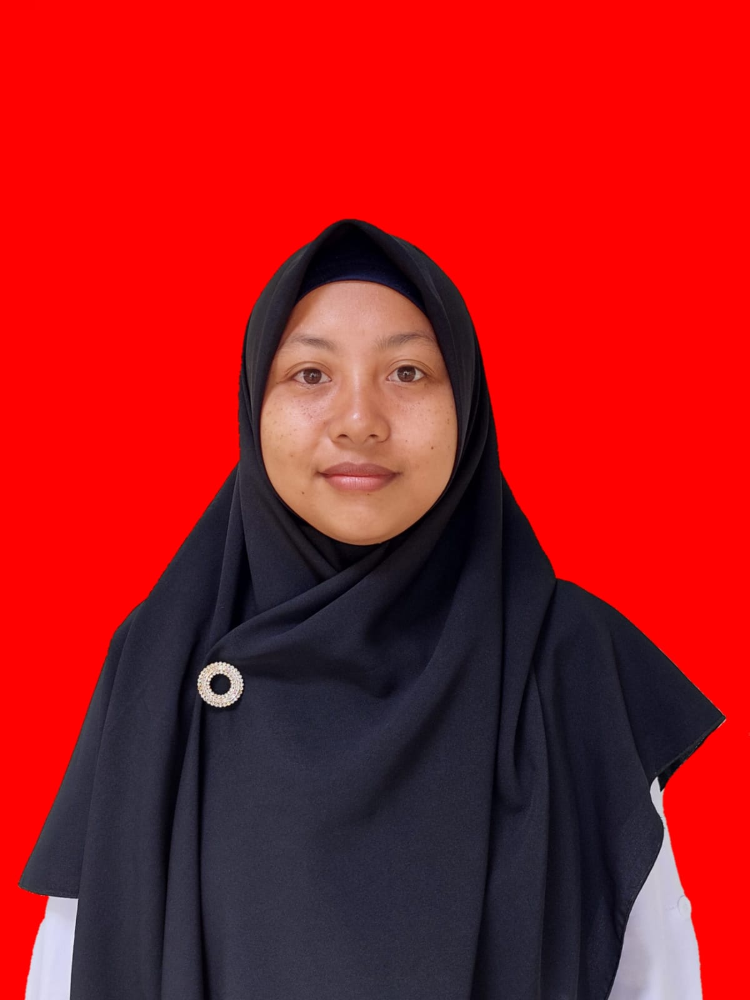
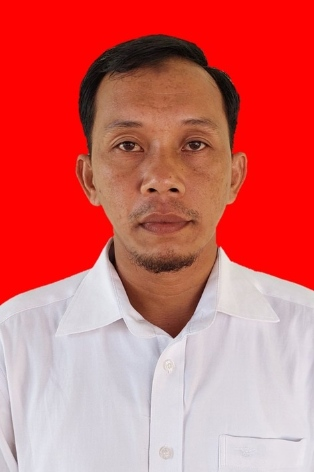
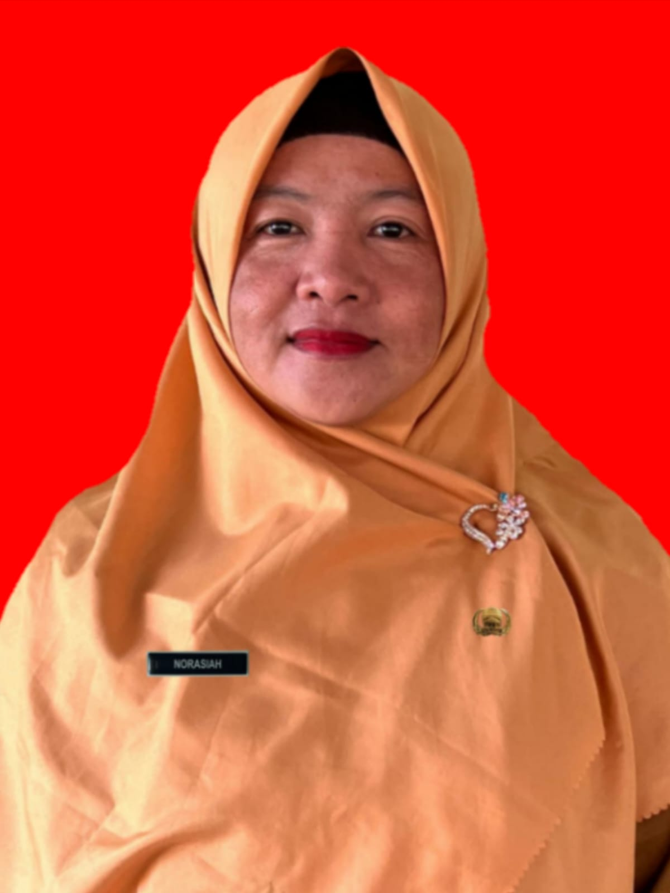
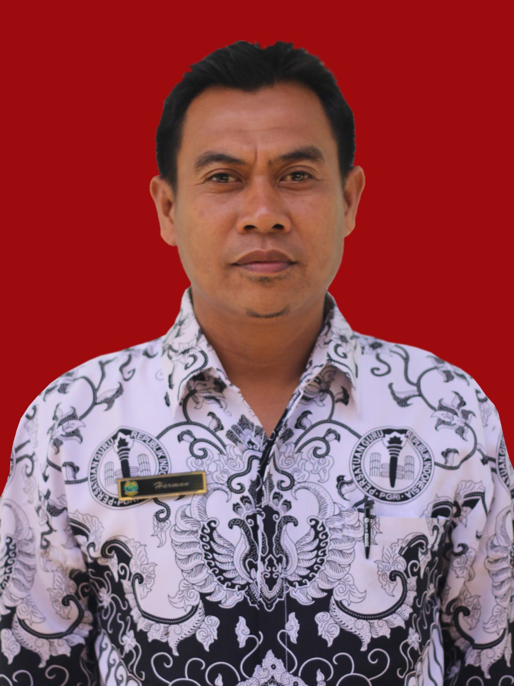

Struktur Kepemimpinan
Kepala Sekolah & Wakil Kepala Sekolah SMK Negeri 1 Lingga

Kepala Sekolah
Syafitriandy, S.Pd.I
NIP. 198110202009031006

Waka Kurikulum
Sabarani, S.Pd
Waka Kesiswaan
Zainal Abidin, S.H

Waka Humas
Listyorini, S.Pd
Waka Sarpras
Junaidi, S.Pd
🏛️ Kepala Unit & Koordinator

Kepala Perpustakaan
Arinaldi, S.Pd

Kepala Unit Produksi
Lisa Noviyanti, S.Pd
Kepala Laboratorium
Destian Kudus Irmansyah, M.Pd

Kepala Bengkel
Waris Sukijo, S.Pd
📜 Riwayat Kepemimpinan Kepala Sekolah
SMK Negeri 1 Lingga · 2011 – Sekarang
Kepala Sekolah Ke-1
Tarsim Tarigan, S.Pd
2011 – 2025
👑
↓
Kepala Sekolah Ke-2 · Aktif
Syafitriandy, S.Pd.I
2025 – Sekarang
🌟
Guru Produktif
Pengajar mata pelajaran Agribisnis Ternak Ruminansia
Destian Kudus Irmansyah, S.Pd
Guru Produktif
NIP. 198912252019031001
Guru Produktif
Waris Sukijo, S.Pd
Guru Produktif
NIP. 198808062019031001
Guru Produktif
Zaini, S.Pt
Guru Produktif
NIP. 199111102025211161
Guru Produktif
Arinaldi, S.Pd
Matematika & Koding
NIP. 199510222023211008
Guru Produktif
Listyorini, S.Pd
Bahasa Inggris
NIP. 198702012022212004
Guru Produktif
Lisa Noviyanti, S.Pd
PIPAS
NIP. 199308222023212018
Guru Produktif
Tarsim Tarigan, S.Pd
Informatika
NIP. 196806181991011001
Guru Produktif
Guru Normatif & Adaptif
Pengajar mata pelajaran umum dan pendukung
Ahmadin, S.Ag
Pendidikan Agama Islam
NIP. 196809252024211001
Guru Normatif

Khoriyah, S.Pd.I
Pendidikan Agama Islam
NIP. 199104072025212159
Guru Normatif
Sabarani, S.Pd
Bahasa Indonesia
NIP. 199103032015031002
Guru Normatif
Junaidi, S.Pd
Pendidikan Jasmani & Olahraga
NIP. 199204052022211015
Guru Normatif
Zainal Abidin, S.H
PPKN
NIP. 198405062022211004
Guru Normatif
Tata Usaha
Staf administrasi dan operasional sekolah

Umar, S.Pd
Kepala Tata Usaha
NIP. 198507222025211010

Norasiah, S.Pd
Tata Usaha
NIP. 197903232025212008
Sampion, S.Pd
Tata Usaha
NIP. 198506152025211136

Harman, S.Pd
Tata Usaha
NIP. 198007142025211078
Miftachudin
Tata Usaha
NIP. 198807142025211123